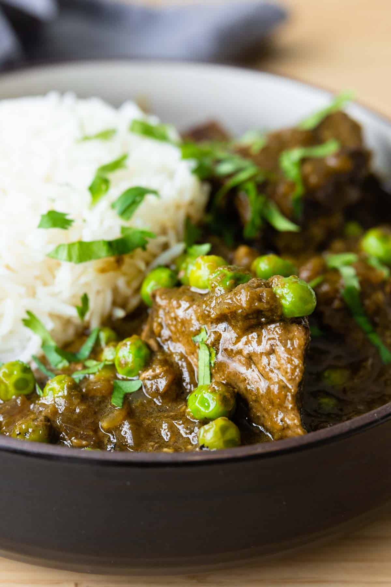

Seco de Carne!

Description:
Seco is a flavorful Peruvian stew made with beef or chicken,
slow-cooked in a vibrant cilantro sauce with potatoes, peas, and
carrots. It's rich, aromatic, and traditionally served with rice.
Ingredients:
- 1 1/2 lbs beef
- 1 bunch cilantro
- 1 cup beef or chicken broth
- 1 onion, chopped
- 2 cloves garlic, minced
- 1 tbsp aji amarillo paste (optional)
- 1 cup potatoes, diced
- 1/2 cup peas
- 1 carrot, sliced
- 1 cup cooked beans (optional)
- 2 tbsp vegetable oil
- Salt & pepper to taste
Steps:
Home